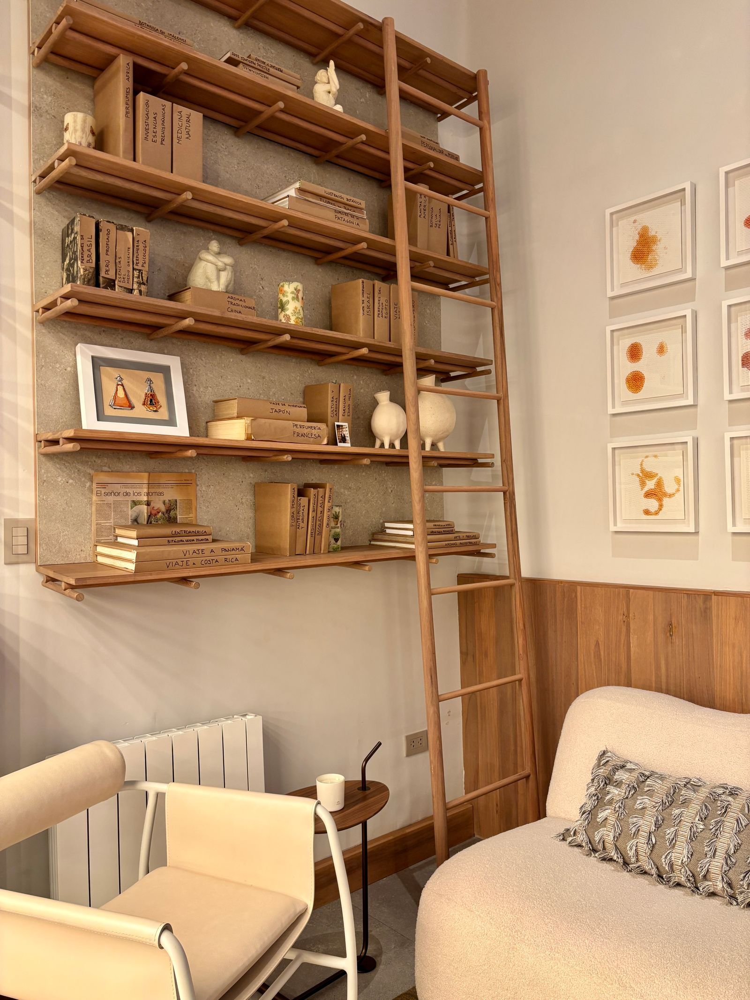
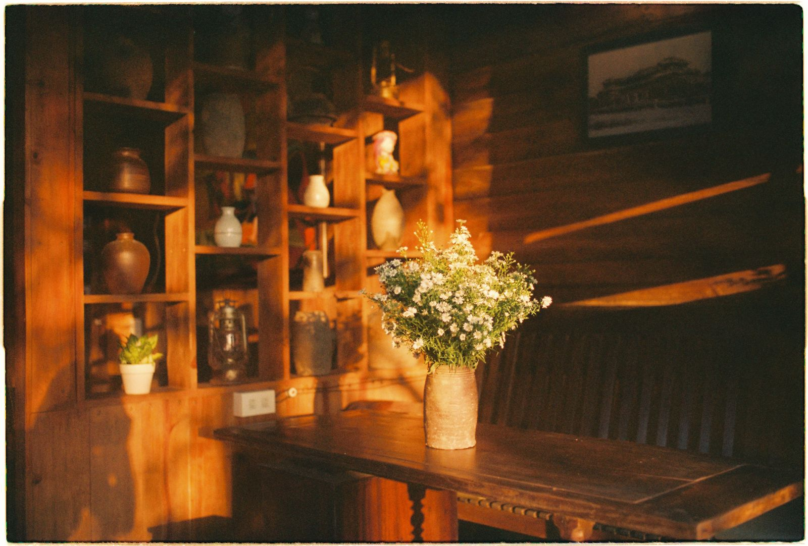
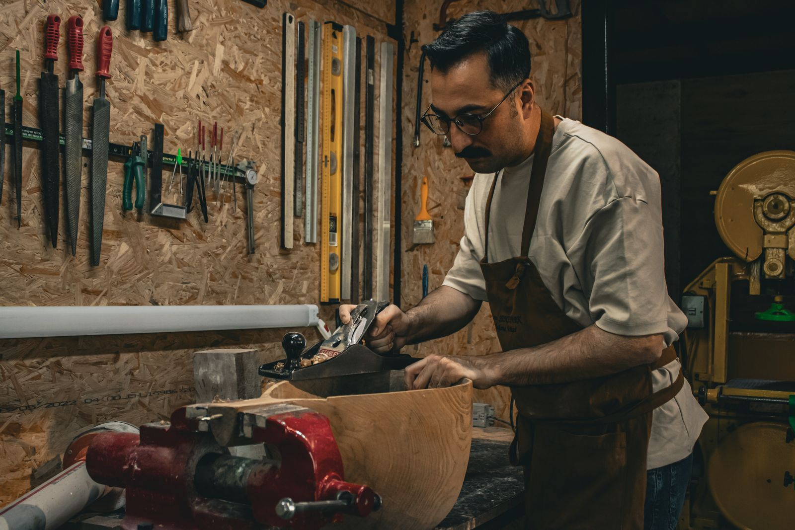

Размер под комнату
Ширина от 74 до 182 см. Выбирайте от двух до пяти секций и столько уровней, сколько нужно.

Дерево, книги, дневной свет / 00101 / ПРЕДМЕТ
Каркас из массива, секции с открытыми полками и закрытыми ячейками. Пропорции задаются под конкретную стену.
от 24 100 ₽
Настроить конфигурацию Выберите секции, покрытие и количество закрытых ячеек ниже.01 — Коллекция
Два, три, четыре или пять вертикальных пролётов. Стеллаж собирается из повторяющихся ячеек высотой 39 см; дверцы можно добавить только там, где нужно скрыть вещи.
Ширина от 74 до 182 см. Выбирайте от двух до пяти секций и столько уровней, сколько нужно.
Дуб, орех или окрашенный ясень. Каждая поверхность приятна на ощупь и стареет красиво.
Система растёт вместе с коллекцией книг, новой работой и новой квартирой.
02 — Конструктор
Пара параметров — и будущий предмет уже обретает форму. Расчёт обновляется сразу.
03 — В интерьере

Идея для пространства, где всё на своём месте

Точность рук, натуральная фактура, спокойная отделка
Хороший предмет не просит внимания.
Он просто становится частью жизни.